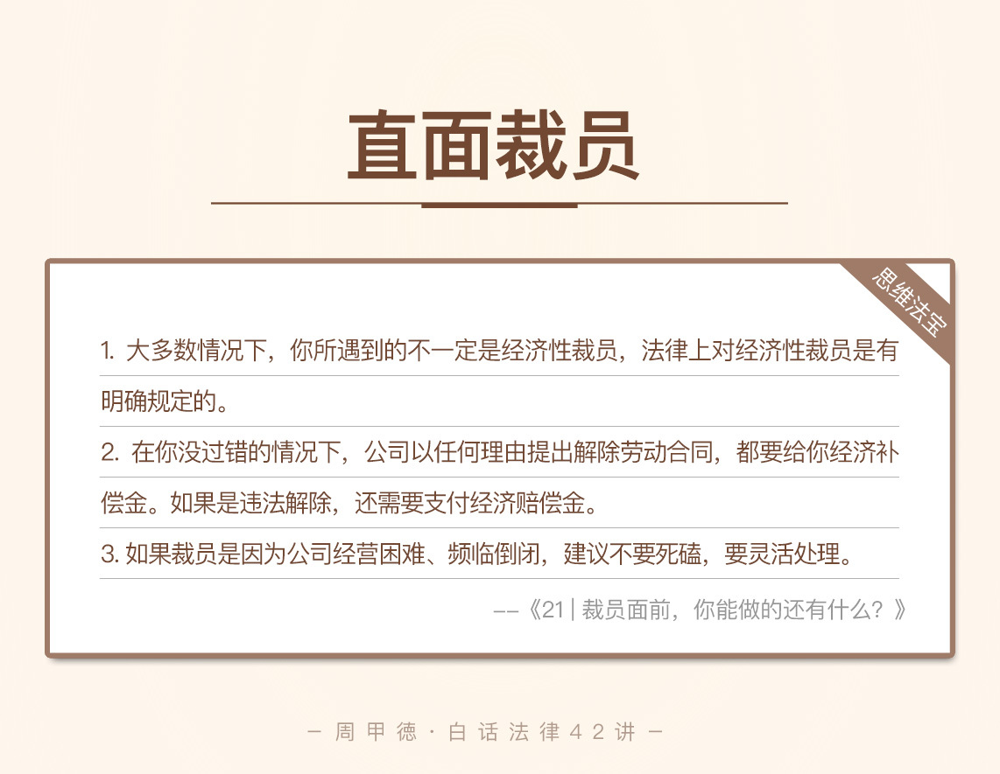

- 00 开篇词 这年头，你真应该懂点法律常识.md.html
- 01 “老周，我想知道” 常见法律认知盲区（一）.md.html
- 02 “老周，我想知道” 律师就在你身边（二）.md.html
- 03 “老周，我想知道” 律师就在你身边（三）.md.html
- 04 “老周，我想知道” 律师就在你身边（四）.md.html
- 05 创业未捷老板跑，社保工资哪里讨？.md.html
- 06 保密还是“卖身”，霸王条款怎么看？.md.html
- 07 编造流言蹭热度？看守所里降温度！.md.html
- 08 合同在手欠款难收，报警有用吗？.md.html
- 09 致创业：谁动了我的股权？.md.html
- 10 又见猝死！工“殇”究竟是不是工伤？.md.html
- 11 期权的“前世今生”.md.html
- 12 裁员面前，你能做的还有什么？.md.html
- 13 抄袭、盗图为什么做不得？.md.html
- 14 加班、工资、休假，你知道多少？.md.html
- 15 受贿原来这么“容易”.md.html
- 16 今天你用“VPN”了吗？.md.html
- 17 漏洞在眼前，可以悄悄破解吗？.md.html
- 18 “爬虫”真的合法吗？.md.html
- 19 非法集资到底是个啥？.md.html
- 20 黄色网站？不仅仅是“黄色”罪名.md.html
- 21 谁修改了我的积分资产？.md.html
- 22 外挂真能大吉大利吗？.md.html
- 23 如何看待“从删库到跑路”？.md.html
- 24 “伪基站”是你的避风港吗？.md.html
- 25 “网络诈骗”真的离你很远吗？.md.html
- 26 智斗中介：“北上广”租房图鉴.md.html
- 27 买买买！买房的“避坑”指南.md.html
- 28 闪婚又闪离，彩礼怎么理？.md.html
- 29 离婚还想和平？你要这么做.md.html
- 30 遗产继承的爱恨情仇.md.html
- 31 骗术升级？假结婚、假离婚的那些事儿.md.html
- 32 孩子学校受伤，谁之过？.md.html
- 33 如何让欠债还钱真正“天经地义”？.md.html
- 34 从透支到盗刷：人人须知的银行卡纠纷.md.html
- 35 远离“套路贷”的套路大全.md.html
- 36 危险！酒驾为什么被罚那么重？.md.html
- 37 老人倒地，“扶”“不服”？.md.html
- 38 “能动手就别吵吵”，代价你真的知道吗？.md.html
- 39 发生交通事故，如何处理？.md.html
- 40 交通事故综合法宝.md.html
- 41 婚姻家庭综合法宝.md.html
- 42 买卖房屋综合法宝.md.html
- 一键直达 法律专栏“食用”指南.md.html
- 加餐 “新冠肺炎”影响下，17个常见法律问题解答.md.html
- 结束语 法律，不会终止的篇章.md.html
- 捐赠
12 裁员面前，你能做的还有什么？
这几天的北京开始冷了，寒冬之中，很多人也在忧心目前的经济形式。相信你也已经听说了一些公司开始裁员的消息。聚美优品的高级副总裁刘惠璞，就针对这个话题发了一条微博。
他说这两天面试了几个候选人，它们离开上一家公司的原因都是公司裁员、组织调整等。这是他十六年的人力资源职业生涯里，第一次遇到候选者全是被裁员的情况。
其中，大部分候选者还希望自己的薪水能有所上调。刘惠璞表示，他们并没有做好过冬的心理准备。不过相信在过去，很多人都没有经历过这样的冬天，“这还只是初冬而已”。
他还分享了一个故事，他朋友所在的公司想裁员又下不了手，只好停发了技术团队的季度奖金，并且不再涨薪。没想到的是，这个过去靠加薪都留不住的技术团队，居然无人因为这个决定离开。
其实读完这个消息，我都有点凉意，这个冬天的确有点冷了。Winter is coming，身处寒冬，要如何去面对公司的裁员呢？今天我就来讲讲裁员相关的那些事儿。
这两天我收到了不少类似的咨询，来访者的经历也都是大同小异。为了方便描述，我为主人公化名小蔡，来描述并分析这样的情况。
半个月前，小蔡所在的公司迎来了一阵寒风，上司找小蔡聊天，聊公司发展、小蔡的工作情况，最后却告诉小蔡，他要被裁员了。这不就是传说中的口头裁员了吗？小蔡一脸茫然，但是也不敢耽误时间，赶紧先找了新的工作。
可是，原公司却迟迟不签离职合同，也不谈裁员的赔偿问题，这该怎么办呢？
口头裁员真的有效吗？
如果公司就这么拖着一直不签，小蔡能去新岗位就职吗？
各种裁员形形色色，方式也是多种多样，并不都是法律条款规定里的模式。但是，一些基本的法律规定，我们还是必须了解的。再怎么多变的裁员，也都脱离不了法律上劳动合同的那些内容。
劳动合同解除
劳动合同解除，是指劳动合同约定的工作年限还不到，但双方协商或是任一方提出，要提前解除劳动关系，导致劳动合同提前终止，不再继续履行下去。
一般情况下，按照方式不同，劳动合同解除可以分为三类：
协商解除；
员工单方面解除；
公司单方面解除。
解除方式不同，产生的法律后果也不同。接下来，我们就来看看这三种解除。
1.协商解除
指公司和员工经过协商，达成一致意见，提前终止双方的劳动关系。这也是最常用的一种解除劳动合同的方式。
2.员工单方面解除
员工单方面解除劳动合同，也就是我们通常所说的“辞职”。多数情况下，公司属于更强势的地位，所以，为了保护员工的权益，法律赋予了员工无理由解除合同的权利。
也就是说，不管劳动合同有没有到期，公司有没有过错，员工都可以提前三十天，以书面形式通知公司解除劳合同。当然，如果是在试用期，员工只需要提前三天，书面通知给公司就可以了。
另外，如果公司有过错，员工还享有法定的解除权。这种情况下，员工甚至不需要提前三十天通知，并且在提出解除劳动合同的同时，还可以索要经济补偿金。
公司方面的过错，通常是指公司没有准时发工资，工资没发全，或没有依法给员工交社保等。这些情况，我们在专栏前面的文章里都分析过，你可以返回去详细阅读。
3.公司单方面解除劳动合同
还是刚刚说过的，法律为了保护员工的权益，并不允许公司随意单方面解除劳动合同。只有发生下面三种情况，公司才可以解除。
一是员工存在严重过错的情况。比如说员工不符合录用条件、在简历上弄虚作假、严重违反公司制度、严重失职或是犯罪等。这种情况下，公司不需要赔偿。
二是员工没有过错，但是各种主、客观因素导致不能正常工作的情况。这里主要是指《劳动合同法》第四十条规定的三种情况。
员工患病或受伤（非工伤），在规定的医疗期满后，不能从事原来的工作，也做不了公司另外安排的其他工作。
员工不能胜任工作，经过培训或调整工作岗位，仍然不能胜任。
外部条件发生变化，跟签劳动合同时的情况有很大差别，导致劳动合同不能正常履行，并且双方协商也不能达成一致意见。
比如说，前不久一些北京企业的外迁，就出现了这样的情况。因为工作地点改变，公司和员工不能达成一致意见，公司就需要解除一部分人的劳动合同，到了新地点再继续招人。
三是特殊情况下的经济性裁员。看到裁员两个字，相信你的神经都紧绷了起来。这也是我们今天要学习的一个重点，法律意义上的裁员究竟是什么？你们公司的所谓裁员真的合法吗？接下来我们详细解读。
经济性裁员
生活中，我们把某个公司集中、大规模地辞退员工叫做裁员，这其实只是一种笼统的称呼，并不准确。法律上的裁员，更准确应该叫做“经济性裁员”，属于公司单方面解除劳动合同，并且也是员工没有过错的情况。所以，法律对经济性裁员的条件和流程，有明确严格的规定。
首先我们来看经济性裁员的含义。《劳动合同法》所称的经济性裁员，其实是指特殊情况下，公司进行的有人数限制的辞退行为。
这里的特殊情况是指：
公司依照破产法规定需要进行重整的；
或者生产经营发生严重困难的；
或企业转产、重大技术革新、经营方式调整的；
或因劳动合同订立时客观情况发生重大变化，导致劳动合同不能继续履行的。
这里的人数限制是指，裁员在20人以上，或者不到20人，但占了员工总数10%以上。如果不符合这样的条件，并不能称为法律上的裁员。
而公司裁员的流程，也有特定要求：
要提前三十天，向工会或者全体职工说明情况，并听取意见。
要向劳动行政部门报告裁减人员方案。
实际裁减人员，解除劳动合同。
不过要注意，这里的第二条“向劳动行政部门报告”，并不是必须得提前审批，而是一种事后或事前的报告行为，也就是要让劳动行政部门知道这件事。这样，必要时劳动行政部门可以采取监督措施，纠正违法行为，防止发生群体性维权事件。
经济补（赔）偿
如果裁员已成定局，对于我们劳动者来说，最关心的就是补偿问题，也就是我们所说的经济补偿和经济赔偿。
经济补偿金是公司解除劳动合同时，公司一次性给予员工的经济补偿，这是法律上的解释。
我总结了下面四种情况，公司需要向员工支付经济补偿金：
由公司提出，和员工协商，一致解除劳动合同。
由员工提出，理由是公司存在过错（比如没按时发够工资、没交社保），解除劳动合同。
由公司提前三十天提出，而员工并无过错，也就是上面讲到过的，公司单方面解除劳动合同的第二种：员工生病受伤、不能胜任工作、或情况发生重大变化。
经济性裁员。
经济补偿金的标准按员工在公司的工作年限来算。
每满一年，支付一个月工资；
六个月以上不满一年的，按一年计算；
不满六个月的，向员工支付半个月工资。
所以，如果你工作了4年，应该补偿4个月工资；如果工作了4年8个月，补偿5个月的工资；如果工作了4年4个月，则补偿4.5个月的工资。
另外，如果公司违反法律规定解除劳动合同，公司要向员工支付经济赔偿金。经济赔偿金的标准是经济补偿金的两倍，也就是说，把刚刚计算出来的月份乘二就可以了。
所谓的“N+1”补偿标准
从HR那里或者在网上，你可能经常听到经济补（赔）偿的“N+1、N、2N”的说法。这些其实不是专门的法律术语，不过应用很广，在这里我也简单解释一下。
“N”其实就是我们所说的经济补偿金，也就是符合那四种情况时，公司给你的补偿。比如说你工作7年，N 就是7，你可以得到7个月的经济补偿。
“N+1”的背景还是刚刚我们讲过的，公司单方面解除劳动合同的第二种：员工生病受伤、不能胜任工作、或情况发生重大变化。这里的“1”也被称为代通知金，不是法律上的专有名词，其实就是指这种情况下，因为没有提前30天通知而给的补偿。
所以，在这样的背景下，公司如果没有提前30天通知员工，就需要额外支付1个月的工资。当然如果提前30天通知到了，就只需要按照N的方式，给相应的经济补偿金就可以了。
“2N”指的是公司违法解除劳动关系的情况，一般有下面两种。
法律明确规定了几种不能解除劳动关系的特殊情况，如果公司强行解除，就属于违法解除。比如在孕期、产期、哺乳期内，在规定的医疗期等特殊情况，就是违法解除。
公司没有合法理由，也没有按照法定流程解除。这种情况一般不符合“N+1”的背景，也没有提前通知。
在这里，要特别注意两点：
这里“N”按员工前12个月的平均工资计算；“1”按上个月的工资来算。
N和月工资的计算都有上限。公司经济补偿的工作年限，最高不超过12年；而员工月工资的标准，不高于公司所在地的年度职工平均工资的三倍，如果超过三倍，只按三倍计算。
情景分析
现在我们再来看小蔡的问题。
第一个，口头裁员有效吗？
我国《劳动合同法》明确规定，劳动合同的签订、变更、解除都需要用书面的形式，公司应用书面通知小蔡，而不能口头裁员。结合小蔡的描述，公司只是口头提出，但实际上双方没有解除劳动关系，劳动合同也继续生效。
第二个，劳动关系存续期间，能否找新的工作，签新的劳动合同？
虽然劳动关系继续，但是既然公司有裁员的意向，作为员工，提前找好新工作是无可厚非的，法律也不禁止。但在上一份劳动合同解除之前，尽量不要签新的劳动合同，否则会让自已陷入被动。
比如说，原公司可能倒打一耙，以你“在劳动关系存续期间，签署新的劳动合同，严重影响工作”为由，提出解除劳动合同，你反而成了过错方，得不到补偿。再或者，公司变卦，不放你走了，对下家公司你就成了违约方。
这种情况下，建议小蔡找公司人力资源管理部门沟通，必须明确双方的劳动关系。
如果公司不提出解除劳动合同，则需要继续工作；
如果公司依然是口头解除，不给书面文件，则可以取证（证据包括比较多，比如说工作证、工资条、劳动合同、辞退相关证据、工资发放情况、录音录像、证人证言、社保等），依法提出解除劳动合同，并要求经济补偿。
思维法宝
最后，总结一下，如何面对裁员呢？
首先要判断你们公司属于哪种情况，到底是不是经济性裁员。结合我讲过的所有解除劳动关系的情况，给自己准确定位。

第一，大多数情况下，你所遇到的不一定是经济性裁员，法律上对经济性裁员是有明确规定的。
经济性裁员，至少有三点要求：
裁员人数。裁员人数在20人以上，或不到20人但占员工总数的10%以上。
公开说明。公司必须向全体员工说明情况，并征求意见。（法律虽然规定的向工会征求意见，但可能很多公司没有运行良好的工会组织）
提前通知。公司必须提前30天通知员工征求意见。
如果公司裁员不符合这三个条件，都不属于法律上的经济性裁员。
另外，即使属于经济性裁员，公司同样需要向你支付经济补偿金，也就是我们所说的N。
第二，在你没过错的情况下，公司以任何理由提出解除劳动合同，都要给你经济补偿金。如果是违法解除，还需要支付经济赔偿金。
第三，如果裁员是因为公司经营困难，频临倒闭，连工资都发不了，联系我们前面讲过的“老板跑路文章”，建议你灵活处理。
我的建议是这样的：
首先能拿多少现钱是多少钱，条件允许的话，可以让公司打欠条，证明拖欠自已的款项。
拿不到钱的话，可以和公司协商，以物抵押，并要求公司办理手续证明这一点。
钱和东西都拿不到的话，不要死磕，及时止损，先解除劳动合同关系，办理离职手续，然后赶紧找到下一家。否则，公司人去楼空，你却人财两空，离职证明都没有，社保也有断档的风险。
离职后，仍然可以继续维权。自己的前途最重要，所以不要恋战，但是，对于该得的，找律师或者其他机构继续帮你维权就是了。
今天的主要内容是这些，对于裁员你还有别的什么问题吗？你有过类似的经历吗？欢迎留言和我分享，也欢迎把这篇文章分享给你的家人、朋友。法律，是你最后的武器。
© 2019 - 2023 Liangliang Lee. Powered by gin and hexo-theme-book.